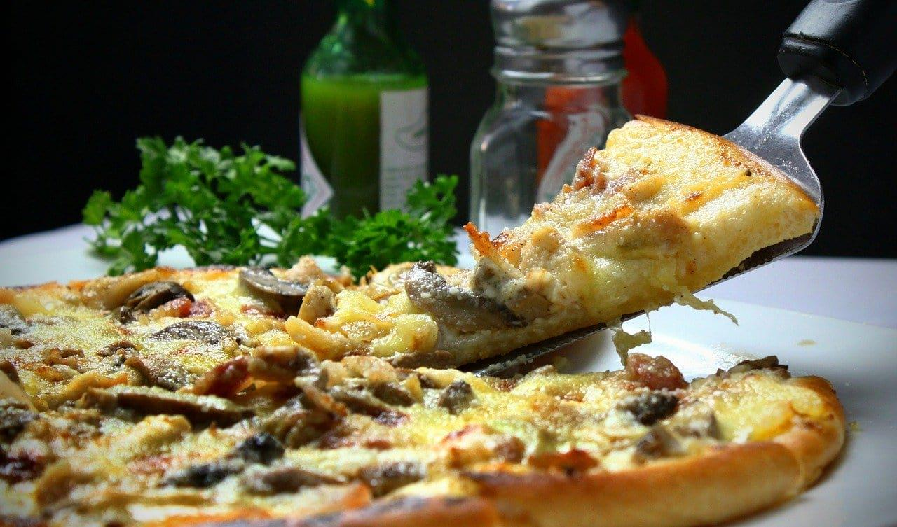

Italy’s most emblematic culinary creation, the genuine pizza
Napoletana is made with just a few simple ingredients and
prepared in only two variations – marinara, the basic Neapolitan
pizza topped with a tomato-based sauce flavored with garlic and
oregano, and margherita, which is topped with tomatoes,
mozzarella, and fresh basil leaves, a delicious combination
whose colors are said to represent the Italian flag.
The crust is very thin at the base, and the dough puffs up on
the sides, which results in airy crust that should have typical
charred 'leopard spots' if baked properly. The origins of this
iconic Neapolitan dish can be traced to the early 1700s, when
what we know today as pizza marinara was first described by
Italian chef, writer, and philosopher Vincenzo Corrado in his
treatise on the eating habits of the people of Naples.
